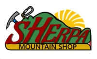

Ranciobloc
3 settori · 1.200 m quota · competizioni StoneColdCrazy
Zona di recente sviluppo, in continua espansione con tre settori principali. Praticabile tutto l'anno grazie all'esposizione favorevole e alla quota elevata che garantisce roccia asciutta.

Raduno
Sede delle competizioni StoneColdCrazy2007. Il settore più frequentato della zona.

Felice
Zona ampia con orientamento impegnativo. Grande varietà di stili.

Menaresta
Il primo settore scoperto. Accesso comodo e rapido, ottimo per sessioni veloci.

Pietraluna
Zona raccolta, ideale per sessioni veloci o giornate corte.
Civatebloc
7 settori · zona più vasta e varia del Lariobloc
La zona più estesa: diversi settori con esposizioni e stagioni differenti. C'è sempre qualcosa da scalare, qualunque sia il periodo.

Taja Sass 2022
Il settore più recente della zona, sviluppato da Paolo Zorloni e collaboratori.

Solarium
Esposizione sud, asciuga in fretta. Gradi fino alla 7A.

Condominio
Blocchi ravvicinati con problemi di forza e tecnica.

Lo Stinco
Avvicinamento brevissimo. Ideale quando il tempo è corto.

Trappole di Luce
Giochi di luce filtrata tra gli alberi. Stagione estiva.

Eremo
Il settore più lontano. Avvicinamento lungo ma l'ambiente ripaga.

Meteore
5 minuti dall'auto. Il settore del Civatebloc più accessibile.
Altre Zone
Valmadrera · Gajum · Galbiate · Lecco · Cimaganda

Valmadrerabloc
Blocchi alti fino a 7 m. Avvicinamento verso il Moregallo. Evitare le giornate più calde o fredde.

Gajumbloc
Valletta ombreggiata e fresca d'estate. Difficoltà medio-alte.

Galbiatebloc
La zona più comoda: 30 secondi dall'auto. Adatta alle famiglie e ai principianti.
La Bonacina
Boulder urbano vicino a Lecco, presso le vasche naturali del Calderone. Perfetto per sessioni dopo il lavoro.

CimagandaBloc
Miniguida bouldering nella zona di Cimaganda, tra Val Chiavenna e Masino.
Partner

Sherpa Mountain Shop
Negozio di attrezzatura per arrampicata, alpinismo e outdoor.
Via 4 novembre n°42 — Ronco Briantino (MI) · 039-6817092